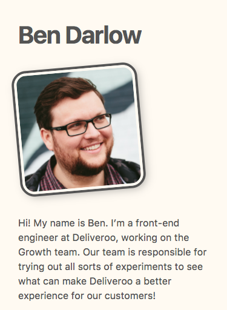
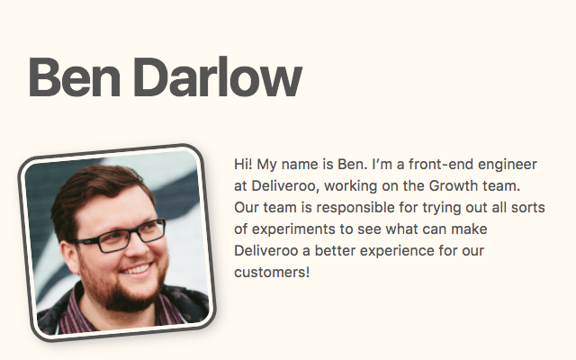

Media Queries are a feature of CSS that give you more control over when a set of CSS rules should apply. Whilst they can be used for lots of other things too, we mostly use them to control what size of device display we want certain rules to work at. This is very useful for applying different CSS to layouts on mobile devices to desktop computers with larger screens to best take advantage of the different available space.
Here is a really simple example:
h1 {
font-size: 40px;
}
@media only screen and (min-width: 400px) {
h1 {
font-size: 60px;
}
}Here we’re setting the font-size for h1 to 40 pixels, but then also adding a Media Query rule for screens wider than 400px, which then increases the font-size to 60 pixels. Here you can see how this changes the layout at different sizes:
375px 
640px 
You probably notice that the layout of the text following the portrait changes, from appearing below the photo, to alongside it. You can learn how to make this kind of layout using floated elements.